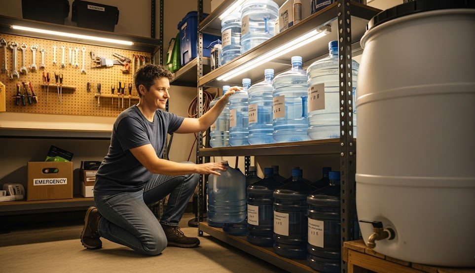

Home Water Storage & Rotation
Objective
Store enough safe water for people, cooking, and sanitation with simple rotation so it’s fresh when needed.
How Much
- Minimum 4 L/person/day (drinking + minimal cooking).
- Better: 8–12 L/person/day if space allows.
Containers
- Food‑grade jugs or drums (19–200 L); avoid old chemical containers.
- Keep out of sunlight; label “DRINKING” vs “UTILITY.”
Treatment
- Use clean municipal water as‑is; if uncertain, add unscented bleach (per guidance) and seal.
Rotation
- Date containers; rotate every 6–12 months.
Real Example
Family kept 120 L across six 20 L cubes; rotated two per quarter onto normal use to keep stock fresh.
Checklist
- Containers + spigots
- Hand pump for drums
- Bleach, labels
Contingencies
- Small space → under‑bed 10–15 L tanks.
After-Action
Record weekly water use to refine your emergency target.
← Previous | All Articles | Next →